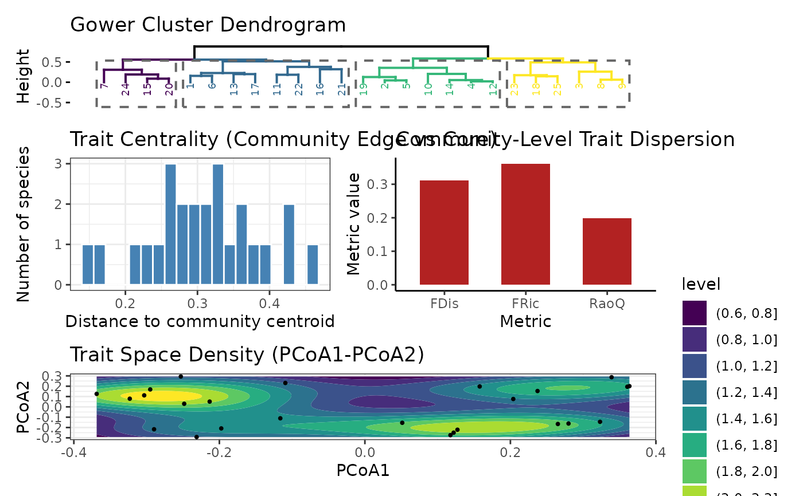
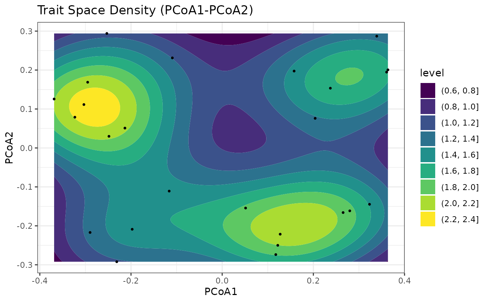

Trait Dispersion Pipeline: Gower → clustering → PCoA → density → metrics
Source:R/compute_trait_dispersion.R
compute_trait_dispersion.RdComputes a Gower dissimilarity matrix on mixed-type traits, performs hierarchical clustering, runs PCoA, visualizes density/centrality, and summarizes functional dispersion metrics (FDis, FRic, Rao's Q).
Usage
compute_trait_dispersion(
trait_df,
species_col = 1,
k = 4,
pcoa_dims = 2,
abundance = NULL,
kde_n = 100,
viridis_option = "D",
show_density_plot = TRUE,
show_plots = FALSE,
seed = NULL
)Arguments
- trait_df
data.frame. One row per species (or unit); mixed types allowed.
- species_col
integer or character (default = 1). Column to exclude from distance.
- k
integer (default = 4). Number of clusters in dendrogram.
- pcoa_dims
integer (default = 2). PCoA axes retained (≥ 2).
- abundance
numeric vector or NULL. Optional species weights; normalized internally.
- kde_n
integer (default = 100). KDE grid resolution for density.
- viridis_option
character (default = "D"). Palette option for
viridisLite::viridis.- show_density_plot
logical (default = TRUE). Also compute a base
filled.contour.- show_plots
logical (default = FALSE). If TRUE, prints a portrait patchwork of all ggplots.
- seed
integer or NULL. Optional RNG seed.
Value
A list with components:
distance_matrix(matrix),hc(hclust),pcoa(list fromcmdscale),scores(data.frame withcentrality),centroid(numeric),metrics_df(data.frame with FDis/FRic/RaoQ),plots(list of ggplots:$dend,$density_gg,$centrality_hist,$metrics_bar).
Details
FRic is computed as convex-hull volume/area in PCoA space via geometry::convhulln.
If degenerate, returns NA with a warning. Rao's Q uses Euclidean distances in
reduced PCoA space: \(0.5\sum_{i,j} p_i p_j d_{ij}\).
Examples
# --- Built-in simulated example for reproducibility (mixed continuous + categorical traits) ---
tdp_simulate_traits <- function(n = 30, seed = NULL) {
if (!is.null(seed)) set.seed(seed)
species <- paste0("sp_", seq_len(n))
# continuous
t1 <- rnorm(n, 0, 1)
t2 <- runif(n, -1, 1)
# ordinal
t3 <- factor(sample(1:3, n, TRUE), ordered = TRUE)
# binary
t4 <- factor(sample(c(0, 1), n, TRUE))
# categorical
t5 <- factor(sample(LETTERS[1:4], n, TRUE))
traits <- data.frame(
species = species,
t_len = t1,
t_mass = t2,
t_rank = t3,
t_bin = t4,
t_cat = t5,
check.names = FALSE
)
abundance <- rexp(n, rate = 1)
list(traits = traits, abundance = abundance)
}
# Generate simulated traits + abundance
sim_data <- tdp_simulate_traits(n = 25, seed = 123)
# Run pipeline and show combined patchwork
res <- compute_trait_dispersion(
trait_df = sim_data$traits,
species_col = "species",
abundance = sim_data$abundance,
k = 4,
pcoa_dims = 2,
show_density_plot = FALSE,
show_plots = TRUE
)
#> Warning: The `<scale>` argument of `guides()` cannot be `FALSE`. Use "none" instead as
#> of ggplot2 3.3.4.
#> ℹ The deprecated feature was likely used in the factoextra package.
#> Please report the issue at <https://github.com/kassambara/factoextra/issues>.

# Access metrics
res$metrics_df
#> Metric Value
#> 1 FDis 0.3113964
#> 2 FRic 0.3613049
#> 3 RaoQ 0.1991308
# Access a specific plot
res$plots$density_gg
